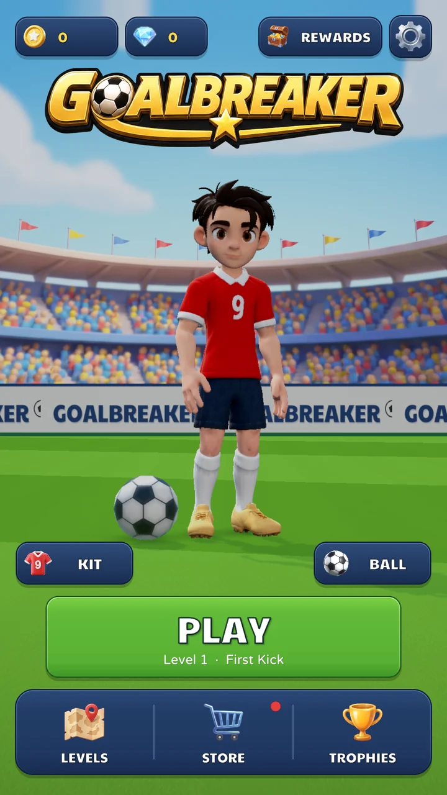
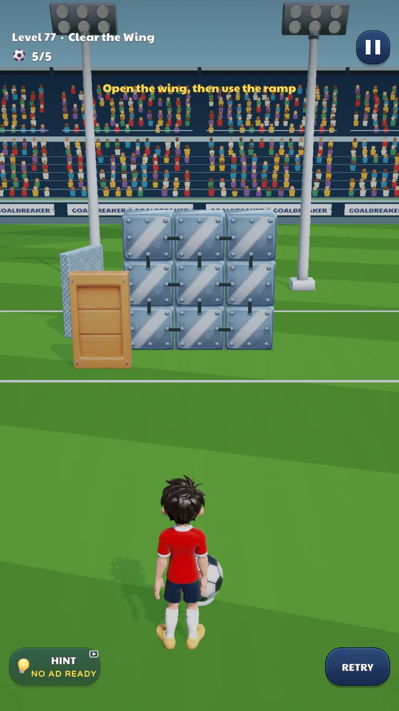
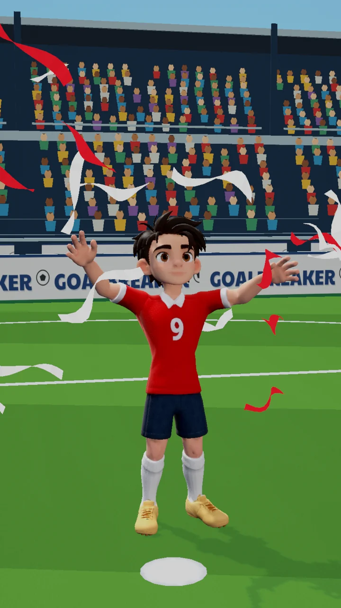

Açını bul
Düz bir vuruş çiz ya da çizgini bükerek falso ver. Engelleri oku ve kaleye giden yolu bul.
Android için futbol bulmaca oyunu
Tek parmak. Birkaç top. Yolunu kesen bir duvar. Açıyı bul, duvarı indir ve her vuruşunu değerlendir.
Nasıl oynandığını görAndroid · Yakında Google Play’de


150ana seviye
6geçilecek bölüm
1parmakla oyna
ÇevrimdışıKendi hızında oyna
Nasıl oynanır
Her seviyede seninle kale arasında bir duvar var. Futbol içgüdüsü biraz yaratıcı yıkımla buluşuyor. Şut çekmek kolay; mükemmel vuruşu bulmak ise eğlencenin başladığı yer.

Düz bir vuruş çiz ya da çizgini bükerek falso ver. Engelleri oku ve kaleye giden yolu bul.
Tahtayı kır, tuğlaları çatlat, camı paramparça et ve yapıları devir. Her duvar farklı bir fikir ister.
Kaleciyi geç, üç yıldızın peşine düş ve daha iyi bir çözüm için geri dön. Sınırlı sayıda top her kararı önemli kılar.

Kutlamayı hak et
Her zaman yıkılacak bir duvar daha ve oyunu kendine göre yapmanın bir yolu daha var.
Mevcut sürümde uygulama içi satın alma yok. Reklamlar internet bağlantısı gerektirir.
Goalbreaker SSS
Android için bir futbol bulmaca oyunu. Her seviyede seninle kale arasında bir duvar var: vuruşunu tek parmakla çiz, topu falsoyla engellerin etrafından dolaştır ve duvarı yıkıp golü at.
Altı bölümde 150 ana seviye var; üstüne yan yollar ve günlük duvarlar.
Goalbreaker yakında Android için Google Play’de. Çıkış haberini kaçırmamak için Instagram’da @goalbreakergame hesabını takip et.
Evet. Seviyeler, açılan eşyalar ve ilerlemen çevrimdışı çalışır. İsteğe bağlı ödüllü videolar internet bağlantısı gerektirir.
Seviyeler arasında reklam yok. Ödüllü video yalnızca ek yardım ya da oyun içi bir ödül için sen seçtiğinde oynar; mevcut sürümde uygulama içi satın alma yok. Ayrıntılar Destek sayfasında (İngilizce).
Hayır, hesap açman gerekmez. İlerlemen cihazında saklanır.
Oyun İngilizce ve Türkçe.
Türkiye’deki Talvero Games stüdyosunun arkasındaki bağımsız geliştirici Doğukan Saçmaözü.
Yakında Google Play’de
Lansman haberleri için Instagram’da @goalbreakergame’i takip et.
Goalbreaker’ı Türkiye’de bağımsız bir geliştirici olan Doğukan Saçmaözü yapıyor. Küçük bir stüdyo, peşinden gitmeye değer bir fikir ve oynayanlarla daha da iyileşen bir oyun.